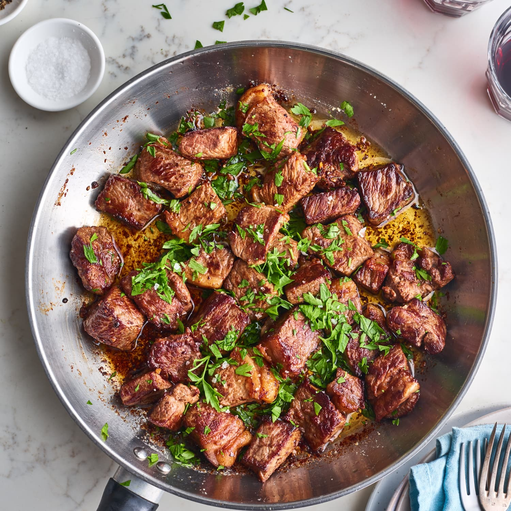
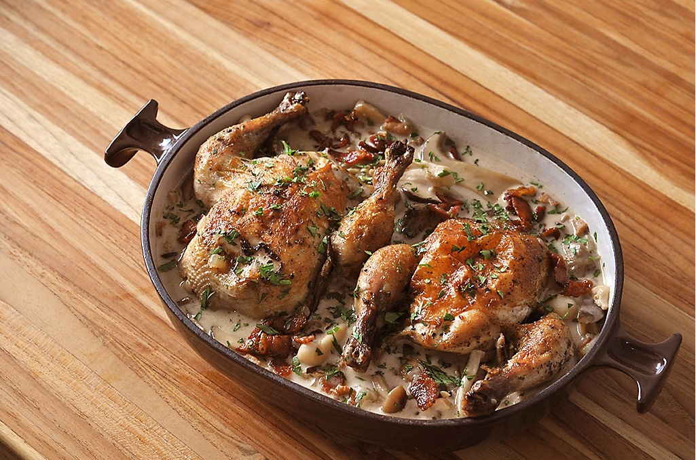
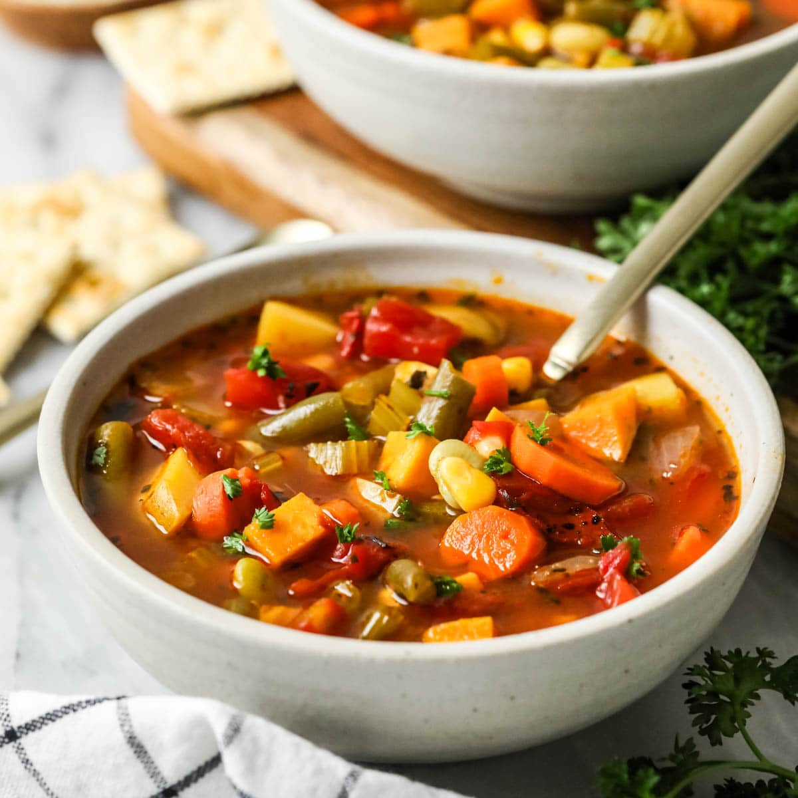
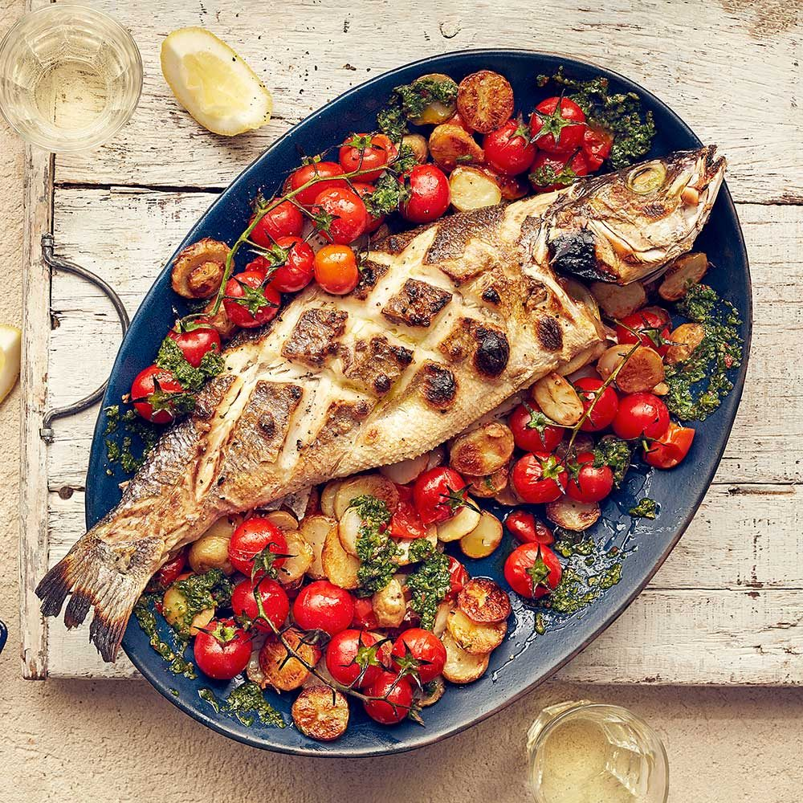

Cooking Recipes
Explore Ian's favorite cooking recipes, organized into simple categories.

Meat
Hearty and flavorful dishes featuring beef, pork, and more. From slow-cooked roasts to quick weeknight stir-fries.

Poultry
Chicken and turkey recipes perfect for any night of the week. Grilled, baked, or sautéed — there's something for everyone.

Soups & Stews
Warm, comforting bowls of goodness. Perfect for cold days or when you need something simple and satisfying.

Miscellaneous
Everything else that doesn't fit neatly into a category — sides, pastas, and Ian's personal experiments.